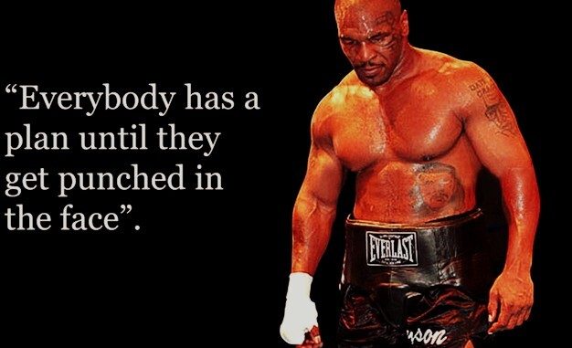
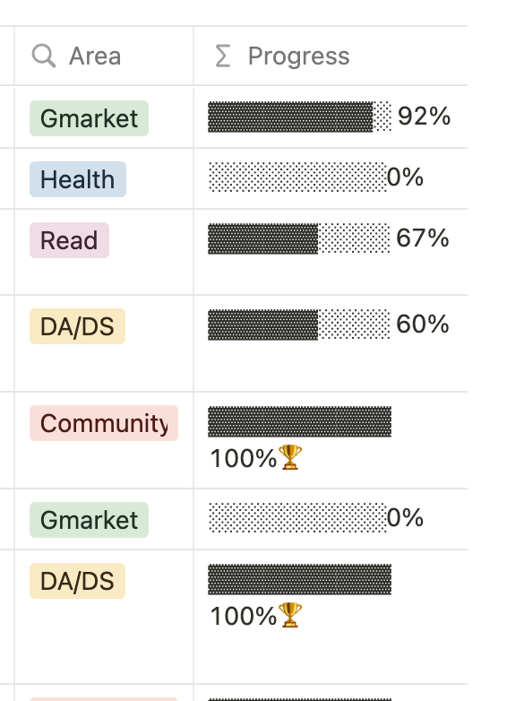

월간 회고록: 4월
Python 관련 잡설, 고객 관심사의 선제적 반영, 뽀모도로 아웃, 지치지않는 방법
회고를 분기 별로 나눠서 하는게 나을지 고민 중이다. 굳이 회고할만한 굵직한 것들이 없는데 매달 회고를 할 필요가 있나 싶기도 해서. 그럼에도 불구하고, 이렇게 결국 월간 회고를 쓰고 있는 이유는 분기 마다 쓰면 너무 거창한 작업이 될까 싶기도 해서이다.😂 월간 회고의 목적은 오로지 지난 한 달을 가볍게 성찰하는 것에 오는 개인적인 재미와 만족감에 있기에.
일
Python 관련 잡설
R에 익숙하고 tidyverse를 좋아하는 사람에게 Python에서 pandas만을 활용해 Data wrangling을 수행하라는 것은 고문과 같다. pandas가 구리다는 것은 아니고, 나는 tidyverse의 pipe-friendly한 코드를 작성하는 것이 더 익숙하고 편하기 때문이다. 그래서, Python에서 tidyverse style을 구현한 라이브러리를 찾아볼 수 밖에 없었다. 내가 불편해하는 것은 누군가도 불편해했을 것이고, 이에따라 누군가가 구현을 해놓았을 것이기 때문에..😂 다행히 몇 가지 패키지를 발견 했고, 그 중 가장 완성도있고 최근까지 업데이트가 되고있는 라이브러리를 소개해본다.
datar는 Python에서 여러 백엔드로 제공되는 data manipulation을 위한 API를 R의 tidyverse 패키지와 최대한 align되도록 재구상한 라이브러리에 해당한다. 사실 작년 4분기에 Python 기반 도구인 Streamlit으로 대시보드를 개발하며 siuba라는 라이브러리를 이용해 data wrangling을 수행했었는데, siuba의 경우 pipe-friendly한 코드를 짜기에는 부족한 기능들이 너무나 많았다. 이와 달리, datar은 tidyverse로 데이터를 만질때 종종 사용하는 R Base의 함수들까지 상당수 커버하고 있다. 당연히 R에서 tidyverse로 데이터를 가지고 노는 만큼은 편하지 않지만, 그래도 이정도면 아주 만족스러운 퀄리티다. 레퍼런스도 아주 쉽고 상세하게 제공하고 있다. 앞으로도 해당 패키지를 꾸준히 업데이트를 해나가는 데에 동기부여가 될 수 있도록, 이런 레포에는 꼭 스타를 눌러주자! tidyverse 문법을 선호하는 Python 사용자라면 한 번쯤 사용해보기 바란다.
고객 관심사의 선제적 반영
전에 말했듯 우리 팀은 요즘 모바일 홈 개인화에 집중을 하고 있는데, 이 부분에 있어서 다음과 같은 부분을 반영해보기 위해 시계열 자료분석을 수행했었다:
- 당장 관심을 가질만한 상품을 띄워주는 것도 중요하지만, 추후 맞이할 특정 시즌에 구매 의사가 생길만한 상품글까지 고려하여 랭킹 시스템을 구성한다면 고객들의 쇼핑 만족도를 더욱 높여줄 수 있지 않을까?
업무와 직접적으로 관련한 방법론들이기에 자세하게 A to Z까지 소개하긴 어렵지만, 해당 문제를 해결하기 위해 사용한 방법론들을 블로그에 소개하기도 했다. 관심있는 사람들은 참고해보기 바란다.
아무튼, 이 프로젝트를 4월 초에 잘 마무리하고 타 팀에 공유세션까지 잘 마칠 수 있었다. 그런데, 가만 생각해보니 나는 강한 가정을 내포한채로 이 문제를 해결한 것이었다:
- 과거 1년의 추세는 올해에도 이어질 것이다.
앞서 제시한 문제를 보면 알겠지만 결국 예측 문제다. 이 방법론을 좀 더 정교하게 개발하고 싶은 마음이 들었다. 사실, 현재는 1년치 시계열 자기자신의 추세, 계절성만으로 해당 문제를 해결하는 매우 간단하게 풀어내는 로직이다. 계산량을 고려해봐야겠지만 3년 내지 4년 규모의 시계열을 고려하여 yearly seasonality까지 캐치할 수 있도록 하고, 모형에 이전 시차의 기온, 습도, 강수량, 휴일 효과 등까지 반영하여 Monthly로 모형을 갱신하여 매달 예측을 수행해 나간다면, 매달 다가오는 시즌의 고객 관심사를 훨씬 더 정교하게 예측할 수 있을 것으로 생각된다.
물론, 아직 이상적인 상상에 불과하긴하다.

짧은 시간에 끝날만한 수준의 모델링 작업은 아닌 것 같아서, 시도해볼만한 가치가 있는 일인지에 대해 팀 내에 이야기를 해봐야겠다.😀
개인
Pomodoro Out, Task In
지난 연간 회고록에서 뽀모도로로 시간을 관리하고 있다고 했는데, 쓸수록 영.. 별로였다. 뽀모도로를 기반으로 업무와 공부를 하다보니 생기는 부작용은 다음과 같았다:
집중력 하락: 기본적으로 25분 공부 5분 휴식인데, 간혹 회의가 길어져서 1뽀모도로(25분)가 넘어가면 이 뽀모도로로 공부한 시간을 정확히 측정하는 데에 강박이 생겨 일일이 휴식을 Skip하러 가곤 했다. 그리고, 진정한 집중은 “시간이 언제 이만큼 흘렀지?”를 느낄 때라고 할 수 있는데, 뽀모도로 타이머를 기반으로 움직이다보니 오히려 시계를 더 많이 보게 된다.
한 주간 해결한 Task의 양과 질이 아닌 집중한 시간에 집착: 나는 월간 회고를 블로그에 올리고 있지만, 개인적으로 주간 회고도 하고 있다. 개인적으로 쌓아둔 주간 회고를 기반으로 월간 회고가 만들어진다고 보면 된다. 맥의 Focus To-Do 앱을 유료 결제하면 매주 뽀모도로를 얼마나 적립했는지 자세한 보고서를 확인할 수 있다. 이 부분이 오히려 내겐 독이 됐다. 돌아보니 올해 생각해 둔 목표의 달성을 위한 Task들을 이번 주에 얼마나 해결했냐를 평가하는 것이 아니라, 그저 집중한 시간이 얼마인지만 늘상 체크하고 있었다.
물론, 늘 그렇듯 뽀모도로 라는 시간 관리법 자체가 구리다는 것이 아니라 그저 나에게는 조금 안맞는 방법이었다는 것이다.😀 사실 그 전부터 뽀모도로에 부작용을 느껴왔지만 선뜻 버리지 못한 근본적인 이유는 올해 설정해둔 목표를 관리하는 방식에 있었다. 나는 Notion에서 내 올해 목표, 오늘 할 일 등을 관리하고 있는데, 올해 목표를 설정만 해두고 해당 목표를 달성하기 위해 수행해야하는 Task들을 구체적으로 정의해놓진 않았다. 연간 목표를 세운게 처음이라 그런지 많이 서툴렀던 것 같다.
이렇다보니 벌써 2023년의 2분기가 저물어가는데, 해당 목표에 내가 얼마만큼이나 다가갔는지에 대한 정량적인 평가가 불가능했다. 그리고, 이런 평가가 불가능하다보니 거대한 연간 목표의 달성을 위해 내가 열심히 달려가고 있다는 것을 느낄만한 성취감 또한 없었다. 이러한 고민을 안고있었기에 “시간” 중심으로라도 성취감을 느낄 수 있었던 뽀모도로를 버리긴 힘들었다. 그러다가, 이 영상을 마주했다.
드림코딩이라는 채널에서 공유해주신 개발자가 사용하는 노션 노트인데, 올해 목표를 설정하고 해당 목표를 달성하기 위한 Task들을 정의하여 이를 중심으로 일정을 관리하고 싶었던 내 니즈에 완벽하게 부합하는 템플릿이였다. 또한, 위 영상을 보며 노션의 데이터베이스 활용법도 터득할 수 있었는데, 내가 여지껏 노션을 참 무식하게 써왔다는 것 또한 깨달을 수 있었다. 아무튼, 이 템플릿 덕분에 기존에 주먹구구 식으로 관리하던 To do list를 연초에 작성해뒀던 연간 목표와 align하고 각 목표 달성을 위한 Task들을 세부적으로 정의함으로써, Task 중심으로 일정을 관리할 수 있게됐다. 확실히 Task 중심의 관리가 목표에 점차 다가가고 있는 나를 가시적으로 볼 수 있있게 해주기에 훨씬 더 많은 성취감을 주는 듯 하다.

해당 템플릿을 따라 목표를 작성하고 완료를 해나가면 위와 같이 Progress 바가 자동으로 채워지는데, 이게 가져다주는 성취감이 크다. 나같이 게으르고 파워 J인 사람들에게는 한 해를 열심히 살아나가기 위해 주기적인 성취감, 자극이 필요로 되기에 이런게 꼭 필요하다.😂
지치지 않는 나만의 방법
내가 자꾸 이런 식으로 일정 관리의 루틴화를 시도하는 이유는 사실 지치지 않기 위해서다. 평일에 업무를 마치고 퇴근한 뒤에 운동을 하고 공부를 하는 삶의 반복은 누군가에게 번아웃을 가져다줄 수 있다. 이 부분에 있어서 번아웃을 경험하지 않으려면, 퇴근 뒤에 하는 운동과 공부가 특별한 행위가 아닌 것으로 여겨져야 한다. 우리는 매일 밥을 먹고 양치를 하지만, 매일 밥을 챙겨먹고 양치를 하느라 지쳐서 번아웃이 왔다는 사람은 들어본 적 없을 것이다. 특별한 일을 일상의 일로 만들기 위해서는 루틴이 필요하고, 루틴이 몸에 익으면 우리는 이를 특별한 일이 아닌 일상의 일로 여길 수 있게 된다. 특별할 것이 없는 당연한 생활이라는 말이다. 우리는 이런 행위를 다른 말로는 “습관”이라 표현하기도 한다.
나는 게으른 사람이긴 하지만, 다행히 이제는 퇴근 후에 공부하고 운동을 하는 삶이 더이상 특별한 일이라 느껴지지 않는다. 그저 내 꿈에 조금 더 빠르게 다가가기 위해 필요한 일상적인 행위에 불과하다. 아직 내가 모자란 점은 주말에 시간을 보낼 때이다. 토요일에 계획해둔 Task를 다 완료하면 마음이 그렇게 들뜬다. 이게 주말은 아직 똑바로 루틴화가 안됐다는 증거다. 뭔가 큰 일을 해낸 것 같고, 일요일은 그저 쉬고싶은 마음이 든다.😂 성취감과는 조금 다르다. 평일에 하는 공부도 일상이긴하나 계획해둔 것을 다했을 때 느껴지는 성취감은 매우 크다. 그러나, 주말에 설정해둔 계획을 완료한 것처럼 내가 막 엄청 기특하고 마음이 들뜨진 않는다. 사실, 아직 마음 한켠에 일주일에 하루 정도는 마음 놓고 쉬고 싶은 생각이 있어서 그런 듯하다. 그게 주말 이틀 중 하루인 것 같고. 뭐가 맞는 지는 잘 모르겠다. 평일, 주말 가리지 않고 평생 지속가능하도록, 무던하게 자기 발전에 시간을 할애할 줄 아는 그런 사람이 되고 싶다.
맺음말
4월에 가장 뜻깊었던 일은 흐지부지하게 시간 중심으로 목표와 일정을 관리해왔던 것을, 연간 목표와 align한 Task 해결을 중심으로 바꾼 것이라 생각한다. 1분기부터 이렇게 했다면 훨씬 더 많은 성취가 있었지 않았을까 하는 조금 아쉬움도 든다. 아직 2023년 절반도 지나지 않았다. 살면서 처음으로 세워 본 올해 목표들을 꼭 다 달성할 수 있는 한해가 되기를 바래본다.
꾸준함이 모든 것을 이긴다
Reuse
Citation
@online{bang2023,
author = {Bang, Taemo},
title = {월간 회고록: 4월},
date = {2023-05-15},
url = {https://taemobang.com/posts/2023-05-15-monthly-memory-202304/},
langid = {kr}
}